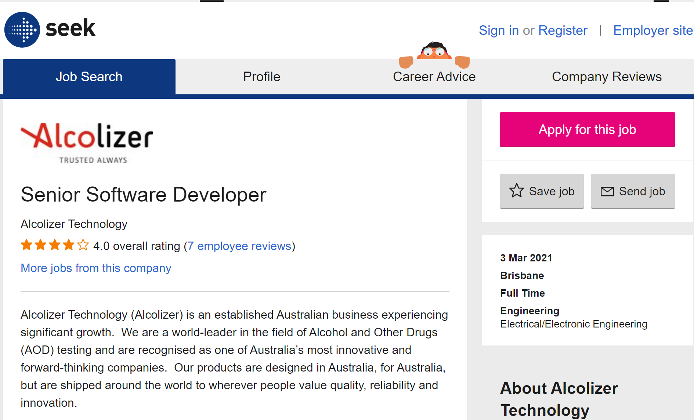
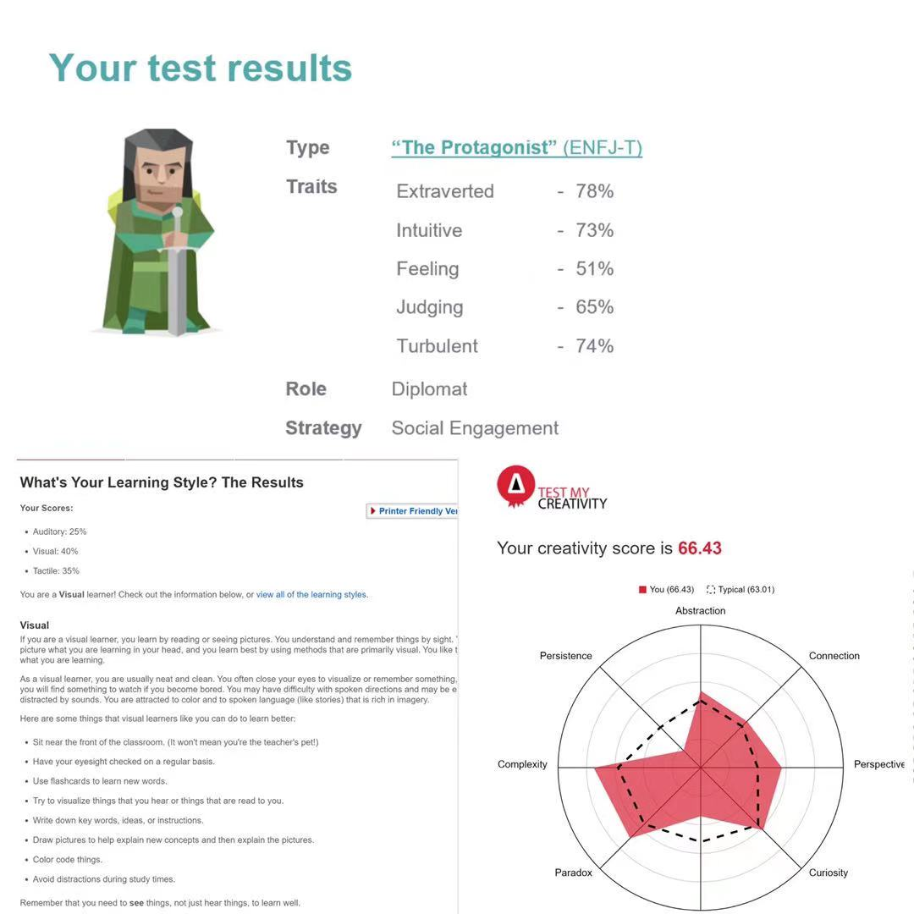

My IT Profile
Project Idea
Personal Profile
Ideal job
Interest in IT
Personal Information
Full name: Long Jingxuan(S3860956)
Bachelor of Information Technology
Hi, I'm Long Jingxuan, you can call me Robert. I'm living in Canton China and I'm a sophomore in RMIT.I speak Chinese but I would like to meet people from other culture. I'm crazy about movies and video games. Nice to meet you guys.
January 29th，2000
BIRTH
190CM,72KG
HRIGHT AND WEIGHT
China
NATIONALITY
--------------------------------------------------------------------- -----------------------------------------------------
s3860956@student.rmit.edu.au
ROBERTrobertlong
15818105522
--------------------------------------------------------------------- -----------------------------------------------------
Interest in IT
•What is my interest in IT?
I'm deeply interested in creating something useful for ordinary people like websites or softwares.Therefore,Rather than software testing I prefer software developing. Moreover, I'm crazy about the learn about IT knowledge which I never know in the internet. I enjoy learning new knowledge and use them in my programs.
•When did my interest in IT start?/Was there a particular event or person that sparked your interest?
When I was a child, I participated in robot-making courses and competitions on a regular basis. I designed robots and make them to be come true. Since then, I loved producing new things by myself. When I learned about programming at first time, I was truly attracted by it and I believe that I'm able to produce couple of programs in the future.
•Why did you choose to come to RMIT?/What do you expect to learn during your studies?
RMIT is a famous university in IT and designing field. I hope I can learn how to develop software apps for social media, artificial intelligence, and more. Graduate with outstanding programming skills and the ability to design.
Ideal job

-------------------------------------------
Position
This position is a software developer who are focusing on studying detection of alcohol and other drugs.
Skills and experience
For getting this position I need
1.the experience in many different programming languages like C and/or C++ and C＃，JavaScript，Java.
2.Knowledge about Linux system and programming in Linux.
3. mathematical foundation in statistics and signal processing
4.Knowledge of hardware
URL
https://www.seek.com.au/job/51675827?type =standout#searchRequestToken=63782b95-b629 -41e9-878e-af3d0d7de75e
•Why does this position attract me
I consider it is a truly useful software for most citizens. It can be widespread used in many occasions like test for drunk driving and drug testing.Moreover, I have interest in hardware as well.Therefore,I'm attracted by this position deeply.
•The skills I have
1.I have some knowledge of hardware due to the fact that I uesd to read computer magazines when I in high school and I pay attention to hardware news on a regular basis now.
2.I can program by some language like C/C++ C#/PHP JS JAVA PYTHON.However, I'm skillful at PHP in that I have internship experience in a company and I worked at website development. 3. I have mastered Object Oriented principles.
•My plan for this job in the future
For getting this position in the future,I believe that not only I ought to promote my capability of programming,but also I need more hardware knowledge.Therefore,
1.I have to find a programming language which helpful for Object Oriented principles like JAVA.
2.I must master some knowledge of programming in Linux so that I will select courses of operation system as soon as possible.
3.Keep reading the magazines of hardware in the future.This is a good hobby.4.In my free time, I'm going to learn about knowledge of biology for adapting to this job better.
Personal Profile

• What do the results of these tests mean for me?
These three results of tests make me know that:
1.I'm good at social activities(Myers-Briggs test)
2.I prefer to learn new knowledge by vision(Learning style test)
3.I have more creativity but less persistence(Creativity test)
I can know myself more clearly including strength and weakness,which are likely to be helpful in society.
• What is my opnions of these results may influence my behaviour in a team?
1.According to result of Myers-Briggs test, I knew that I'm good at dealing with interpersonal relationships.That means, rather than being a leader,I'm likely to being good at uniting people in one team.
2.Due to the result of Learning style test , I'm likely to suggest teammates to study new knowledge by watching videos or article.
3. The result of Creativity test shows me that I have capability to give creative suggestions in one team.
• How should I take this into account when forming a team?
Due to tht fact that I'm good at social activities so that I have ability to call up different people into one team.Moreover, My creativity can attract others as well. Therefore, I believe that it is easy for me to form a new team.
Project Idea
• The project I choose
•Developing a smartphone app, using whatever programming language in which you have expertise, or by using tools such as MIT App Inventor. in order to promote life quality of proprietors, I'm going to develop a online shopping application for property management company,whose users are proprietors in same community.
• Overview
This Smart phone application is an online shopping and exchange idle items software, which is related to proprietors in one community. This applications is designed and developed by property management company.
This software ought to have functions followed:
1: Users sign in this software and full in their location and community.
2: proprietors can apply to sell their idle items on this software and describe it by words and pictures.
3: proprietors can see the detail of this item and ask any detail under this page so that every users can see it.
4: proprietors in same community can buy goods on this software
5: property management company have to take this item deliver it to purchaser as soon as possible and obtain reward from buyer
In order to make most proprietors download my software, I am going to
1:develop this application on different systems including Android and IOS.
2:design a simple operation interface in that siniors are included in proprietors.
• Motivation
•Motivation1: Many proprietors are crazy about flea market in community to sell or purchase some idle items but they have little time to join offline transaction.Mark Ferguson(2018) states that More evidence of Australia's love of online shopping has emerged tonight. According to new data, 4 million people used Amazon Australia last month, up 81 percent from the previous month's figure.Therefore, online flea market is likely to be reasonable idea.
•Motivation2: Denis Metev(2021) states that there are 5.11 billion people using mobile phone(2019) , and half of them are using smartphone. Moreover,there are 100 million new smart phone users each year and most of them are internet users.Therefore, Moblie internet applications is a huge market and rather than software and website in computer , the cost of software development is lower.In other words, it is likely to be a more attractive software if it is a mobile applications.
•Motivation3: Large online shopping company like amazons can't deliver items in a short time.Rather than it, property management company can take items deliver them in one day.
•Motivation4: property management company can obtain data of proprietors by community survey online or other ways.Therefore, it is a large advantages fot property management company to develop a smartphone application for their proprietors.
• Description
This smartphone application can be developed as an independent software by JAVA or PYTHON or it can be a website and little software in large platform like wechat so that I have to use CSS/JS/PHP to develop it.
the process of this project:
1. User registration: Proprietor have to register as a new user and fill in some personal information including gender/community/location/way of contact.
2. post information of goods: Sellers have to upload three or more pictures of their items with least 15 words to describe using experience of goods and selling reasons.After that, sellers have to select type of their goods like female clothes or daily supplies so that others can search this item esier.At last, sellers have to select whether it is a brand new item or used one and give a reasonable price of it.
3.popularize goods: Software will popularize this item to proprietors in same community.
4.purchaser ask detail: Proprietors who are interested in this item can post questions in item page so that other users who have same questions can see it.Sellers will reply those question one by one.
5.purchase the item: purchaser buy the item by paypal or online banking service and software will inform seller to prepare delivery.
6.property management company will contact the seller by calling or e-mail and discuss the time to take the item.
7.staff of property management company will take the item and deliver it to purchaser and get reward from him/her.
8.make comment of the item: purchaser can make comment of this item on comment page which can be watched by other proprietors
9.statistical analysis reputaion: there is a reputation system in software, which means if one sellers receive many negative reputation, software will forbid this seller to sell other items.
10.make comment of property management company: if purchaser dissatisfied with delivery or software,he/she can make comment on it and property management company will collect comment and promote their service.
• Tools and Technologies
1.One computer or laptop.
2.compiler like Visual Studio or Eclipse.
3.open source tools like Git.
(Git is a free and open-source distributed version control framework that can be used by both small and large projects.)
4.some blogs from other developers in DEV Community,which is likely to help you to learn new programming language and how to solve common bugs.
(DEV Community is a group of 585,873 incredible developers.They are a group of coders who share, learn, and advance their careers. Log in after creating a new account.)
• Skills Required
1.Interface design skills.For modern app designers, it is necessary to learn UI/UX design tool.Due to the fact that convenient operation interface is significant for users.
2. Digital business design skills. A incredible business logic model is largest assistance for programmers.
3.Programming skills. The basic capability to develop a software.
For mastering those skills,on the one hand, I have to select some courses related to design in RMIT including User design and business design.On the other hand, I ought to do some mobile application programming practices and start to completed a whole smartphone software project in the future.In my vocation, I'm going to look for internship related to mobile software development.
• Outcome
If this application is developed, there are advantages followed:
1. For property management company: not only property management companies can obtain extra income by delivery and advertisements, but also them can gain more good reputations and data of users.Moreover, same property management company can deliver goods between different communities and company can co-operate with other companies to sell their produce in own software.
2. For proprietors:sellers can earn money by selling idle items and purchasers can receive them in a short time.What's more, if proprietors don't need extra income, they can exchange items which is useful for them on this smartphone application.
• Reference list
•Mark,F，2018,‘There's more evidence tonight of Australia's love of online shopping’, Seven News
•Denis,M,2021,'39+ Smartphone Statistics You Should Know in 2020',Review42